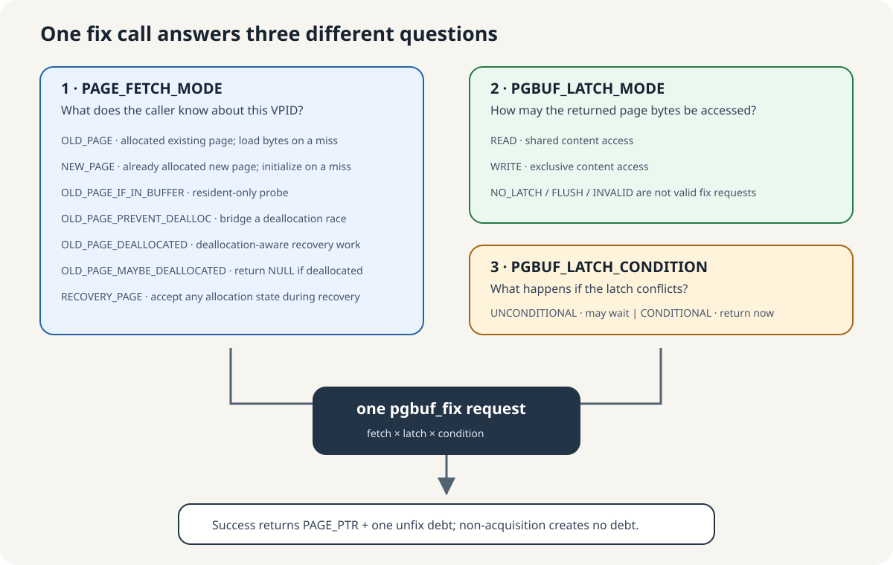
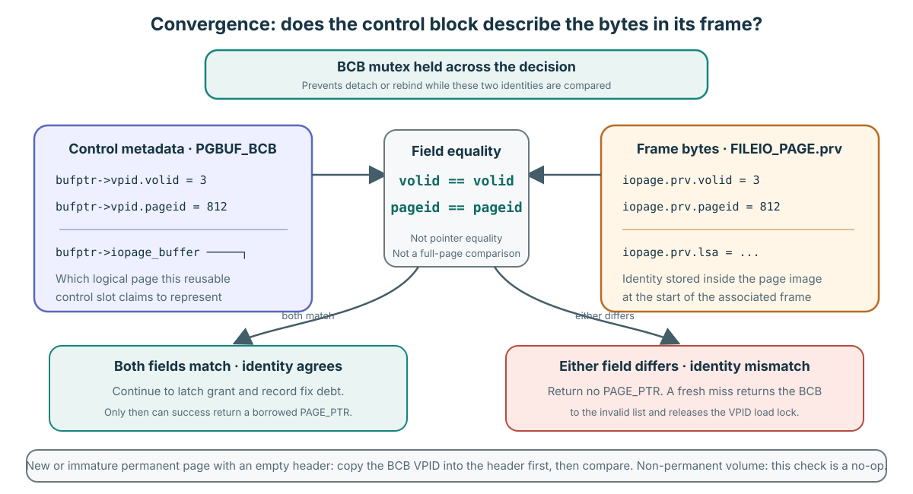
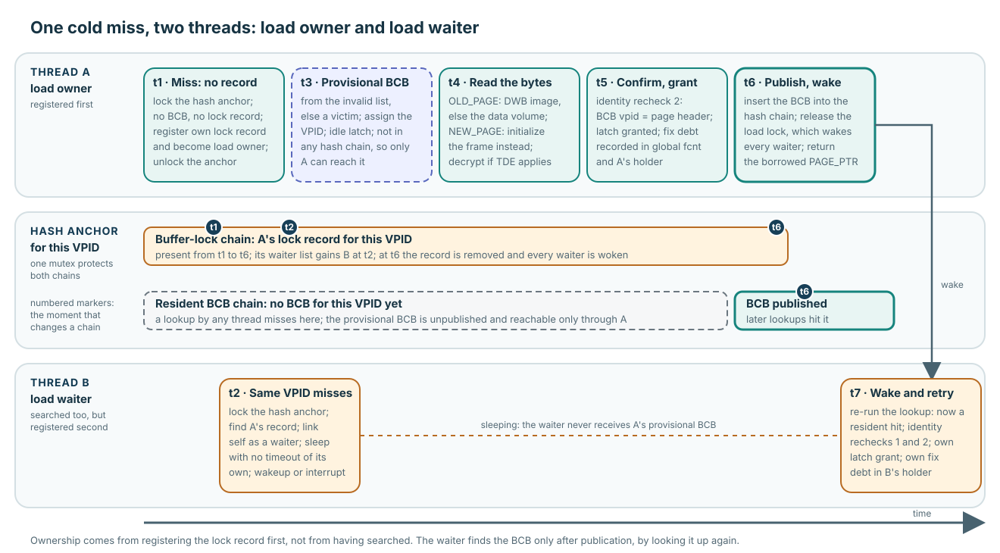
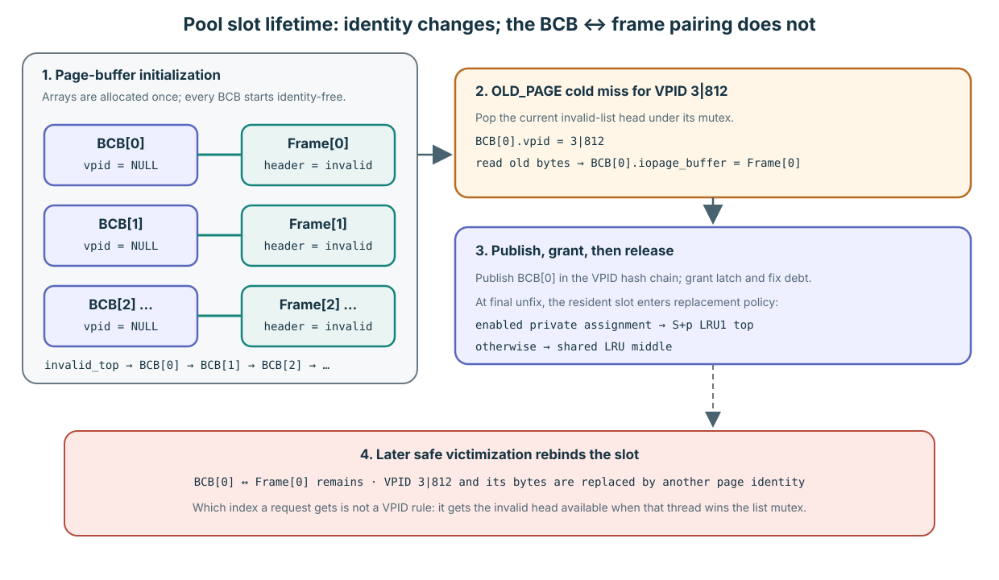
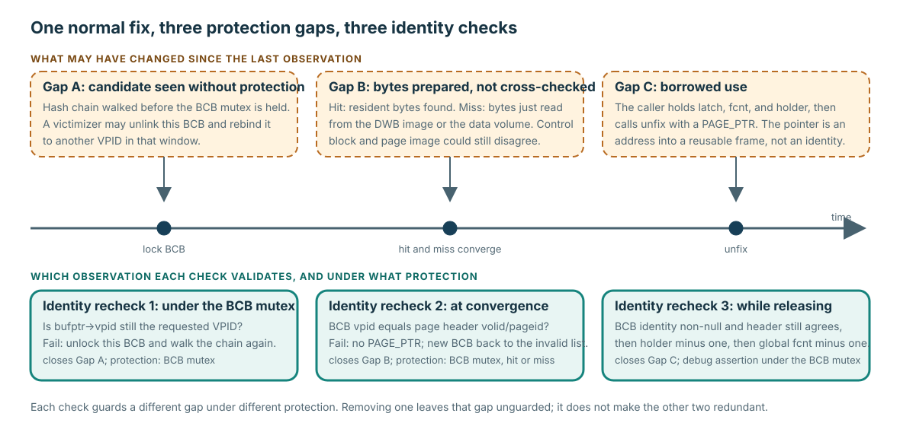

Fix 호출 하나를 서로 다른 세 답으로 나누어 읽습니다
Hit와 miss를 따라가기 전에 질문 세 개를 먼저 던집니다. Caller는 어떤 종류의 logical page라고 알고 있는가? 반환된 bytes에 어떻게 접근할 것인가? 그 접근이 충돌하면 기다려도 되는가? 세 답은 호출 하나에 함께 들어가지만 어느 하나도 다른 답을 대신할 수 없습니다.

| Choice | 답하는 질문 | 짧은 답 |
|---|---|---|
PAGE_FETCH_MODE | 어떤 page이며, miss에서 materialize해도 되는가? | Caller knowledge를 나타내는 일곱 mode 중 하나를 고릅니다. |
PGBUF_LATCH_MODE | READ를 공유할 것인가, exclusive WRITE가 필요한가? | Public fix는 READ 또는 WRITE를 받습니다. |
PGBUF_LATCH_CONDITION | Incompatible request가 잠들어도 되는가? | Conditional은 바로 반환하고, unconditional은 기다릴 수 있습니다. |
일곱 fetch mode를 하나씩 봅니다
Fetch mode는 allocation과 residency에 관한 caller의 진술입니다. READ 또는 WRITE를 고르는 값이 아닙니다.
| Mode | 쉬운 의미 | 중요한 결과 |
|---|---|---|
OLD_PAGE | 할당된 기존 page가 있습니다. | Miss이면 DWB 또는 data volume에서 기존 bytes를 읽습니다. PAGE_UNKNOWN image는 error입니다. |
NEW_PAGE | Allocation이 이 새 VPID를 이미 만들었습니다. | Miss이면 기존 page bytes를 읽지 않고 BCB/frame을 초기화합니다. Caller가 page type을 초기화하기 전의 PAGE_UNKNOWN을 허용합니다. |
OLD_PAGE_IF_IN_BUFFER | 지금 resident일 때만 page가 필요합니다. | Hash miss이면 BCB를 claim하거나 volume을 읽지 않고 NULL을 반환합니다. |
OLD_PAGE_PREVENT_DEALLOC | 기존 page가 latch grant 전 틈에서 deallocation되지 않아야 합니다. | Identity validation부터 fix 성공까지 임시 avoid-deallocation count로 잇고, grant 뒤 제거합니다. |
OLD_PAGE_DEALLOCATED | Recovery 작업이 deallocated image에 접근해야 합니다. | Common path가 PAGE_UNKNOWN image를 반환할 수 있습니다. Deallocation undo는 이를 받아 예전 type을 복구합니다. |
OLD_PAGE_MAYBE_DEALLOCATED | 보통 존재하지만 이미 deallocate되었을 수도 있습니다. | Normal image는 반환합니다. PAGE_UNKNOWN이면 임시 fix를 되돌리고 caller에게 NULL을 반환합니다. |
RECOVERY_PAGE | Recovery가 어떤 allocation state든 받아야 합니다. | 일반 allocation validation을 생략하고 normal, immature/new, PAGE_UNKNOWN image를 모두 허용합니다. |
Latch-mode enum의 다섯 값을 구분합니다
이 enum은 여러 structure에서 쓰이지만 public fix request가 받는 값은 READ와 WRITE뿐입니다.
| Mode | 의미 | Valid fix request? |
|---|---|---|
PGBUF_NO_LATCH | BCB field에서는 현재 grant된 READ/WRITE content latch가 없다는 뜻입니다. 다른 owning field에서는 initialization 또는 cancellation 의미로 재사용됩니다. | 아니요. |
PGBUF_LATCH_READ | Shared page-content access이며 compatible reader가 함께 존재할 수 있습니다. | 예. |
PGBUF_LATCH_WRITE | Exclusive page-content access이며 다른 thread의 READ/WRITE request와 충돌합니다. | 예. |
PGBUF_LATCH_FLUSH | Flush 완료를 기다리는 queue request이며 grant되는 content latch가 아닙니다. | 아니요. |
PGBUF_LATCH_INVALID | BCB에 사용할 수 있는 resident identity가 없습니다. | 아니요. |
PGBUF_NO_LATCH를 설명할 때는 반드시 owning field를 함께 말하세요. NO_LATCH audit은 resident-idle BCB state, waiter cancellation, watcher initialization을 나누어 설명합니다.
Conditional과 unconditional은 충돌 처리 방법입니다
PGBUF_CONDITIONAL_LATCH는 “latch가 충돌하면 잠들지 않는다”는 뜻입니다. Compatible request는 정상적으로 성공합니다. PGBUF_UNCONDITIONAL_LATCH는 “필요하면 기다려도 된다”는 뜻이므로 compatible request는 여전히 즉시 grant됩니다. Zero-wait로 설정된 transaction은 lookup 전에 unconditional을 conditional로 바꿉니다.
OLD_PAGE_IF_IN_BUFFER miss나 conditional conflict는 matching unfix 의무 없이 NULL을 반환할 수 있습니다. NULL을 하나의 보편적 error로 해석하지 말고 caller가 선택한 protocol에 맞춰 해석하세요.Interface contract and Verified mechanism: 모든 enum 값은 pinned page_buffer.h:172–203에 있습니다. Request validation, zero-wait conversion, fast-path eligibility, resident-only miss, deallocation bridge, post-latch page-type outcome은 page_buffer.c:2285–2615에 있습니다.
두 path가 하나의 postcondition으로 모입니다

여기서는 일반 mutex-protected path만 보여 줍니다. lock-free READ path는 Advanced에서 이어집니다.
Resident hit
hash candidate를 찾고 BCB를 보호한 뒤, 여전히 요청한 VPID를 나타내는지 다시 확인합니다.
Cold miss
VPID별로 준비 과정을 serialize하고 provisional BCB/frame을 확보한 뒤 bytes를 읽거나 초기화합니다.
Converge
보호된 상태에서 BCB identity와 page-header identity가 일치하는지 확인합니다.
Grant
요청한 latch를 grant하고 global 및 thread debt를 갱신한 뒤 borrowed pointer를 반환합니다.

그림은 VPID 3|812를 예로 듭니다. 일치한다는 것은 두 integer field 쌍이 같다는 뜻이며, pointer equality나 page 전체 비교가 아닙니다.
PGBUF_BCB.vpid는 “이 재사용 가능한 slot이 logical page 3|812를 나타낸다”는 control metadata입니다. 연결된 frame은 FILEIO_PAGE.prv로 시작하며, 그 안의 volid와 pageid는 “이 byte가 logical page 3|812의 것이다”라고 말합니다. Convergence에서 thread는 BCB mutex를 hold한 채 이 두 field를 하나씩 비교합니다. Mutex는 이 판단 중 detach/rebind를 막고, 이후 page latch가 caller의 content access를 보호합니다.
새 permanent page 또는 recovery가 만난 immature permanent page의 header가 비어 있으면 먼저 BCB VPID를 header로 복사합니다. 두 field가 모두 같으면 latch/debt grant를 계속합니다. 하나라도 다르면 PAGE_PTR를 반환하지 않습니다. fresh miss라면 BCB를 invalid list로 되돌리고 VPID load lock을 release하여 waiter가 retry할 수 있게 합니다. Pinned revision에서 non-permanent volume은 이 비교를 bypass합니다.
Verified mechanism: BCB field는 page_buffer.c:510–518, header 초기화는 5433–5471, 정확한 비교는 11243–11279, protected convergence/unwind는 2440–2472에 있습니다.
page가 hit였다고 더 약한 contract를 받거나, miss였다고 더 강한 contract를 받는 일은 없습니다.
hash candidate는 관찰 결과이지 증명이 아닙니다
hash chain에서 vpid가 일치해 보이는 BCB를 찾을 수 있습니다. 하지만 첫 비교는 BCB mutex로 보호되지 않습니다. thread가 mutex를 얻기 전에 victimizer가 BCB를 unlink하고, 다른 loader가 재사용 가능한 slot을 다른 VPID에 rebind할 수 있습니다.
그래서 hit path는 BCB를 lock한 뒤 VPID를 다시 비교합니다. 값이 바뀌었다면 candidate를 release하고 다시 찾습니다. table이 pool lifetime 동안 유지되므로 BCB storage 자체는 안전하게 살펴볼 수 있습니다. 바뀔 수 있는 것은 그 slot이 나타내는 identity입니다.
Verified mechanism: protected hash-candidate recheck는 pinned page_buffer.c:7594–7722에 있습니다. Pool-lifetime BCB allocation은 5559–5660에서 확인할 수 있습니다.
waiter는 깨어난 뒤 normal lookup을 다시 시도합니다

하나의 hash-anchor mutex가 in-flight load-lock chain과 resident BCB chain을 보호합니다.
- Thread A가 miss한 뒤 VPID load-lock record를 먼저 등록해 load owner가 됩니다.
- 같은 VPID에서 miss한 Thread B는 A의 record를 찾아 자신을 waiter로 연결하고 잠듭니다.
- A는 재사용 가능한 BCB/frame을 얻어 VPID를 지정하고, 이 provisional object를 아직 publish하지 않습니다.
OLD_PAGE라면 A는 DWB를 확인한 다음 data volume을 봅니다.NEW_PAGE라면 frame을 초기화합니다.- identity를 확인하고 자신의 ownership을 grant받은 뒤 A가 BCB를 publish하고 load lock을 release합니다.
- B는 깨어나 lookup을 재시도하고 resident hit를 찾은 뒤 별도의 grant와 debt를 얻습니다.
Verified mechanism: load owner/waiter 등록과 retry는 page_buffer.c:7981–8178에 있습니다. provisional BCB allocation과 DWB/data-volume 또는 NEW_PAGE materialization은 pinned 8392–8634에 있습니다.
초기 cold miss는 현재 invalid-list head를 pop합니다

“BCB를 allocate한다”는 말은 이 VPID를 위해 descriptor를 heap-create한다는 뜻이 아니라 기존 pool slot을 claim한다는 뜻입니다.
Initialization에서 pool은 정확히 num_buffers개의 BCB와 같은 수의 frame을 할당합니다. 각 index i마다 BCB[i].iopage_buffer를 Frame[i]에 연결하고 frame도 그 BCB를 가리키게 합니다. 이어 invalid list는 BCB[0]에서 시작합니다. Initialization에서 이미 BCB[0] → BCB[1] → …로 연결했습니다.
따라서 prior use와 concurrency가 전혀 없는 가장 단순한 예에서는 첫 cold OLD_PAGE miss가 BCB[0] + Frame[0], 다음 miss가 index 1을 claim합니다. 실제 boot에서는 startup work와 concurrent miss가 entry를 이미 pop했거나 되돌렸을 수 있습니다. “VPID가 BCB index N으로 hash된다”는 규칙은 없습니다. 해당 순간 invalid-list mutex를 얻은 thread가 그때의 protected head를 가져갑니다.
pgbuf_allocate_bcb()는 먼저pgbuf_get_bcb_from_invalid_list()에 요청합니다.- Helper는 invalid-list mutex를 lock하고
invalid_top을 pop한 뒤 그 BCB를 lock하고 replacement zone을 INVALID에서 VOID로 바꿉니다. - Load owner는 요청 VPID를 지정하고, old image를 DWB 또는 data volume에서 그 BCB에 이미 pairing된 frame으로 읽습니다.
- Identity convergence 뒤 BCB를 VPID hash chain에 publish하고 ownership을 grant합니다.
- 마지막 unfix에서 새로 materialize된 page는 assigned private LRU가 있으면 그 LRU의 top으로 들어가고, 없으면 선택한 shared LRU의 middle로 들어갑니다. 이후 victim 판단은 Lesson 7이 담당합니다.
| Lifetime | 유지되는 것 | 바뀔 수 있는 것 |
|---|---|---|
| Pool lifetime | BCB storage, frame storage, 일대일 BCB ↔ frame pointer pairing. | List membership, current VPID, latch/flag, LSA, page bytes. |
| Resident-identity lifetime | 해당 resident generation이 유효한 동안 VPID 하나와 BCB/frame의 mapping. | 안전한 invalidation 또는 victimization이 mapping을 끝내며, 같은 pair가 다른 VPID를 나타낼 수 있습니다. |
| Fix 하나의 lifetime | Debt가 남아 있는 동안 caller의 borrowed access. | Matching unfix는 permission을 끝내지만 residency까지 끝낼 필요는 없습니다. |
Verified mechanism: table allocation과 pairing은 pinned page_buffer.c:5559–5667, invalid-list initialization과 top removal은 5911–5918,8905–8951, invalid-first allocation은 8181–8244, materialization은 8470–8634에 있습니다. First-release LRU destination은 Lesson 7에서 설명하는 Implementation policy입니다.
identity validation을 하나의 check로 뭉뚱그리지 마세요

각 check는 서로 다른 보호 아래 서로 다른 관찰을 검증합니다.
| Check | 닫는 gap | 실패의 의미 |
|---|---|---|
| BCB mutex 아래에서 hit candidate VPID 확인 | Unprotected hash observation → protected BCB | 재사용 slot이 rebind되었습니다. chain을 다시 찾습니다. |
| BCB VPID와 page-header identity 비교 | Prepared control state → prepared bytes | control block과 page image가 불일치합니다. borrowed pointer를 반환하지 않습니다. |
| Release-time identity assertion | Borrowed-use period → global decrement | debug build에서 global debt를 갚기 전에 caller/pointer identity 위반을 감지합니다. |
세 번째 check는 일반 mutex-based unfix path의 debug assertion입니다. caller의 의무를 문서화하지만, release build에는 이 assertion으로 인한 runtime guard가 없습니다.
네 가지 사실이 acquisition 성공을 이룹니다
- 요청한 VPID가 BCB/frame에 resident입니다.
- 요청한 page latch가 grant되었습니다.
- Global
fcnt와 현재 thread의 holder가 이 acquisition을 기록합니다. - 반환된
PAGE_PTR는 matching unfix 하나가 이 debt를 갚을 때까지 빌린 것입니다.
Publication은 cold miss 준비 과정의 일부입니다. 어느 준비 path든 성공하고 나면 caller는 위 contract를 기준으로 추론합니다.
하나의 contract 안에서 경로 차이를 설명합니다
문제
“일반 resident hit와 cold miss는 무엇이 다르고, 어느 postcondition이 같으며, miss protocol이 physical disk read가 정확히 한 번임을 증명하지 못하는 이유는 무엇인가요?”
권장 답변 구조: caller intent → hit protection 또는 miss serialization/materialization → 공통 identity confirmation → latch와 두 ledger → borrowed return → evidence 한계.
할 일: waiter가 owner의 provisional BCB를 받는 대신 retry하는 이유를 설명하고, hit path의 stale-observation boundary를 말하세요.
답을 chat에 붙여 넣으세요. mastery를 기록하기 전에 path 순서, ownership, identity evidence, 과도한 claim이 없는지 확인합니다.
바깥쪽 spine만 추적합니다
Pinned page_buffer.c:2342–2546을 읽으세요. hash hit/miss 분기, 공통 page-header check, latch helper, cold-miss publication, 반환 pointer를 표시합니다. 아직 latch queue 내부 mechanics까지 내려가지 마세요.